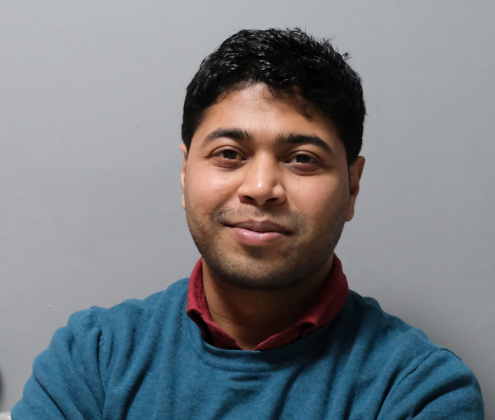

Ashish Raj

Summary
Software professional with over 12 years of demonstrated history of
working in payments, financial, mortgage and telecom domains.
Skilled in software design and development with Spring framework, Java 17,
Micro services, MongoDB, Kafka.
Following Agile methodologies. Adaptive to work with multiple projects in
parallel.
Education
-
B. Tech in Computer Science & Engineering - CDLU, Sirsa (2007-2011)
Work Experience
-
Java Consultant - Torque Engineering (client: Tele2), Stockholm,
Sweden
May 2022 - Current
- Micro services and UI design, development & deployment
- Code review
- Code optimization
- Pair programming.
-
Lead Software Engineer (VP) - Wells Fargo, Bengaluru, India
May 2021 - May 2022
- Micro services design & development
- Performance tuning (services, queries & index optimization)
- Mentoring team
- Code review
-
Software Engineer (AVP) - JP Morgan & Chase Co, Bengaluru, India
Jan 2019 - May 2021
- Requirement Analysis, Designing end to end solution.
- Mentoring team
- Code Optimization
- Development & Release activities
-
Lead Engineer - Altisource, Bengaluru, India
Oct 2016 - Jan 2019
- Requirement Analysis, Designing end to end solution.
- Mentoring team
- Code Optimization
- Development & Release activities
-
Analyst/Professional - BT, Bengaluru, India
June 2015 - Oct 2016
- Requirement Analysis, Designing end to end solution.
- Code Optimization
- Development & Release activities
-
Senior Software Engineer - Altisource, Bengaluru, India
Aug 2011 - May 2015
- Requirement Analysis, Designing end to end solution.
- Code Optimization
- Development & Release activities
Skills
-
Java 17
★★★★
-
Spring Boot
★★★★
-
Micro services
★★★★
-
MongoDB
★★★
-
Apache Kafka
★★
Certifications & Courses
- Java Technologies - CDAC, Mohali (Certificate - July 2010)
-
Apache Kafka Series - Learn Apache Kafka for Beginners v3 - Udemy
(Course - Dec 2023)
- JavaScript Fundamentals - Pluralsight
- M001: MongoDB Basics - MongoDB University
- M101J: MongoDB for Java Developers - MongoDB University
- Microservices Architecture: A Comprehensive Overview - Udemy
-
Oracle Database 12c: Program with PL/SQL Ed 1 PRV - Oracle classroom
- Intro to Splunk (eLearning) - Splunk
- What is Splunk? (eLearning) - Splunk
- Splunk Search Optimization (eLearning with labs) - Splunk
Other